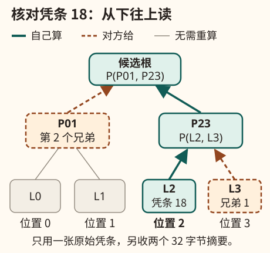
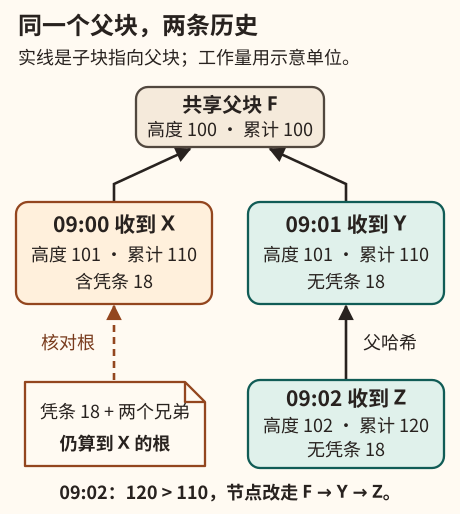

本页目录
给 B 单独算一遍：3 + 1 − 2
假定凭条都是真的。早上开门时，小安有 10 张券，店里和小陈都是 0 张。当天只有下面四笔，不扣手续费。顺着读一遍：哪一笔是小陈付给店里的？店里的券后来又花到哪儿去了？
| 当天的四笔记录 | 店里还剩几张券 |
|---|---|
| 16 号：小安给 B 店 3 张 | 3 |
| 17 号：小安给小陈 2 张 | 3 |
| 18 号：小陈给 B 店 1 张 | 4 |
| 19 号：B 店给小安 2 张 | 2 |
先别发货。 小陈的订单只对应凭条 18，所以这单收了 1 张，还差 1 张。收银员也没算错：店里先收了小安的 3 张，再收小陈的 1 张，后来付出去 2 张，的确还剩 2 张。余额回答的是「店里现在有多少」，小陈问的却是「我这单付了多少」。
换个条件试试：翻出订单原件，发现小陈这单其实只需付 1 张。凭条和余额都没变，现在还要他补券吗？不用。凭条 18 上的收款方是这家店，1 张刚好够付这单。两次判断看的都是同一笔收款，不是店里的余额。
为什么不只抄下最后的余额？
假设收银员和会计各留一本账。收银员先记凭条 16，再记 17；会计把这两行抄反了。不管先给谁，小安手里的券都够付。等四笔都记完，两个人算的余额一模一样，可你问「今天小安先付给谁」，一个答「店里」，另一个答「小陈」。最后剩多少，是账的状态；哪笔在前、哪笔在后，是账的历史。
区块链像这样由多台电脑各留一本账，不必等某个收银员替大家改同一张表。以比特币为例，自己按规则核对账本的电脑叫全节点。一批交易按顺序放在一起，像写成一页，叫一个区块。
怎么知道新的一页接在哪一页后面？不能光看页码。每个新区块都会记下上一个区块的「指纹」——一个由内容算出来的记号。要是有人把旧页上的「1 张」改成「2 张」，重算的指纹就对不上下一页留下的那个了。区块这样一页接一页，才有了「链」。
各留一本，不等于谁的都算数。比如同一份钱已经花了，又被拿来付第二次。就算账页一页页都接得上，比特币节点也会拒绝这样的账。要是两本都符合规则，还有专门的规则来选用哪一本，不是谁的本子多就听谁的。店里的券只用来练习读账，不是比特币。
你已经能分清「账上有这一笔」和「这单付够了」；下一课换你当财务：审批人签的是 125，收到的单子写着 126，还能照付吗？
选做：不用收整页，怎么核对一张凭条？
刚才我们假定凭条是真的。现在换个任务：店里事先保存了这一页的核对值，结算方只肯发凭条 18，不肯寄整页。你要用 MerkleLab.java 查它寄来的凭条和当初那页是否一致。以下是离线实验，不用钱包。
把四张凭条依次摆好，先给每张算出一个固定长度的摘要，叫一片「叶子」。把相邻的两个摘要合起来再算，最后整页只剩一个摘要，叫「根」。这就是 Merkle 树；店里留的核对值就是这个根。


从这里开始，位置按程序的写法从 0 数。凭条 18 在第三格，位置是 2，它的叶子就是 L2。往上一层，缺右邻 L3；把这两个合成 P23 后，再往上缺左半页的 P01。这些跟当前节点配成一对的摘要叫兄弟摘要。结算方给你凭条和这两个摘要，你就能算出根，和店里保留的比一比。这叫包含证明：它核对的是「这页的这个位置记着这张凭条」。
Java 究竟要喂哪几个字节？
先拆凭条 18 的写法：12 03 02 01。实验给小安、B 店、小陈分配的账号分别是 01、02、03。凭条上每两位十六进制是一个字节：12 是十进制凭条号 18，03 是付款方小陈，02 是收款方 B 店，01 是 1 张。每个字段占一个无符号字节。传给程序时去掉空格，写作 12030201；不是把字符 '1'、'2' 分别当作一个字节。
| 位置 i | 原始记录 rᵢ（hex） | 完整的叶哈希输入（hex，5 字节） |
|---|---|---|
| 0 | 10010203 |
0010010203 |
| 1 | 11010302 |
0011010302 |
| 2 | 12030201 |
0012030201 |
| 3 | 13020102 |
0013020102 |
表里凭条是 4 字节，为什么最右一列有 5 字节？算叶子时先加一个 00，意思是「后面是一张原始凭条」。算父节点改用 01，意思是「后面是有先后的两个摘要」。记 H 为一次 SHA-256（结果 32 字节），|| 为字节拼接：
叶：Lᵢ = H(0x00 || rᵢ)
父：P(左, 右) = H(0x01 || 32 字节左摘要 || 32 字节右摘要)
算 P23 时，输入依次是 01、32 字节的 L2、32 字节的 L3，共 65 字节。左右不能换：如果像会计那样把凭条 16、17 抄反，即使余额一样，左半页的摘要和最终的根也会变。根不是压缩包，不能解压出凭条，也不能替你保密。它的用处是先固定一个值，让人事后很难换一份内容还对得上它（依赖哈希函数的安全性）。这叫对内容作出承诺。
自己算一遍：四片叶、两个父节点、一个根
用 JDK 17 或更新版自带的 java、jshell 即可，不用 Maven。从仓库根目录开始；若只下载了 Java 文件，就在它所在目录打开终端，跳过 cd labs。后面的终端命令都在这个目录运行。
cd labs
java -version
jshell --execution local
把下面几行输入 jshell>。把 h 当小计算器：比如 h("0012030201") 会先把这 10 个 hex 字符解成 5 字节，再把这 5 字节交给 SHA-256。返回值重新写成 hex，所以后面可以用 + 拼出下一次输入的写法。
var hex = java.util.HexFormat.of();
var sha = java.security.MessageDigest.getInstance("SHA-256");
String h(String s) { return hex.formatHex(sha.digest(hex.parseHex(s))); }
var l0 = h("0010010203");
var l1 = h("0011010302");
var l2 = h("0012030201");
var l3 = h("0013020102");
var p01 = h("01" + l0 + l1);
var p23 = h("01" + l2 + l3);
var root = h("01" + p01 + p23);
留着 root 的结果。输入 /exit 返回终端，换成整页程序再算：
java MerkleLab.java
预期输出如下。先看 P23 有没有和你在 JShell 算的一样，再核对最后两行根值。比较的是全部 32 字节，不是看到开头都叫 c2d6 就行。
L0=2487f669d56855db396a8f09867bd77d74bc62b29fcbb4479aa8cb2916abc959
L1=cb41c03967ebff5f015aa9fbb9924e7a3926559859e4d2fb9a77f4def84b0cd4
L2=685830c71c7fbddc77512b04a68423618c098b52447c6f98a3b67563748a7dcf
L3=875805ed33594c064626a5a6981dde778756d8177bf60d472c5efbb6527ee321
P01=5fe1c147a2f03c709d5f1b79414603c14a3c64ea661ad57e387b82adbdb61741
P23=08c161f2b7790b64afe299e76c2f8e6e767f4e1d2f753ac19cc5a47c56b550e9
candidate.root=c2d6ba7ea2bb3bc0a5dec604403dc473df26c923b7e9cd81fefb8701f5ed290d
trusted.root=c2d6ba7ea2bb3bc0a5dec604403dc473df26c923b7e9cd81fefb8701f5ed290d
matches.trusted=true
这里有两个来源：candidate.root 是刚刚算出来的；trusted.root 是你在收材料以前就从题目拿到的检查点，Java 文件把它写成了常量。要是把后一行也换成对方刚寄来的值，那只是对方的材料彼此对得上，不是和你的账对得上。
结果对不上时，不要从根猜。先比四片叶：如果连 L2 都不同，检查原始四字节和前面的 00。如果叶都对、P23 不对，检查 01 和左右顺序。在 Java 文件里，leaf 的 update 先放标签，digest(record) 再放原始记录并完成计算；parent 放标签、左摘要，最后 digest(right)。digest 完成后会复位，下一次不会带着上次那张凭条一起算。
合上整页，只收凭条 18，再算一次
现在你站在 B 这边。你知道树有四片叶，也有自己的根。对方说凭条在位置 2，从下往上给了两个摘要：S0 是图里的 L3，S1 是 P01。先合成 P(L2, S0)，得到 P23；再合成 P(S1, P23)，得到候选根。注意第二次是对方的摘要在前，不是每次都把自己的放前面。
程序怎么知道左右？位置 2 写成二进制是 10。从最右边读：0 表示这一层自己在左，1 表示下一层自己在右。代码 ((index >>> level) & 1) 取的就是这一位。到 POSIX shell（如 bash 或 zsh）里，先把最近的兄弟存为 S0，再把上一层的存为 S1：
S0=875805ed33594c064626a5a6981dde778756d8177bf60d472c5efbb6527ee321
S1=5fe1c147a2f03c709d5f1b79414603c14a3c64ea661ad57e387b82adbdb61741
java MerkleLab.java verify 2 12030201 "$S0" "$S1"
预期先看到 step1.sibling=RIGHT，step1.parent 是刚才的 P23，再看到 step2.sibling=LEFT，最后 matches.trusted=true，退出码为 0。verify 没有调用读整页的 tree。四张凭条只用读一张，另外传两个 32 字节摘要。对这样的满二叉树，叶数翻一倍，证明才多一层。
要是客服收到了两封成功通知呢？ 两封邮件都指向同一页、位置 2、凭条 18。把命令执行两遍，核对的是同一张 C → B 1 张，不会因为第二次也得到 true 就再长出一笔。就算其他到账条件都满足，这张应收 2 张的订单最多也只能认 1 张。记下已入账的付款，再来的同笔通知只回「已处理」。这四字节里并没有订单号；付款归哪张订单，还得另查商户的订单记录。
试着改查小安的订单。 这单应收 3 张券，商户记录关联的是凭条 16，之前没入过账。原文 10 01 02 03 是 A 给 B 3 张。它在位置 0：往上两层，自己都是左孩子，所以两次都把兄弟接在右边，分别用整页输出的 L1、P23：
java MerkleLab.java verify 0 10010203 \
cb41c03967ebff5f015aa9fbb9924e7a3926559859e4d2fb9a77f4def84b0cd4 \
08c161f2b7790b64afe299e76c2f8e6e767f4e1d2f753ac19cc5a47c56b550e9
预期依次是 RIGHT、RIGHT、matches.trusted=true。假设商户也已核实该页仍在当前链上、确认数已达自己的要求，这张 3 张券的订单就能核销。B 后来花掉 2 张，是另一笔账，不能因此通知 A「请再补 1 张」。
回到 C 那张只付了 1 张的凭条 18。把最后一字节改成 02，能过关吗？ 先算算账：凭条 17 后 C 恰好有 2 张，改成付 2 张，它确实付得起。可你现在核对的是「当时那页写了什么」，不是「这笔钱理论上付不付得起」。下面第一次只改张数，第二次还原张数、只把位置从 2 改为 3。两次都用凭条 18 原来的兄弟和根：
java MerkleLab.java verify 2 12030202 "$S0" "$S1"
echo "exit=$?"
java MerkleLab.java verify 3 12030201 "$S0" "$S1"
echo "exit=$?"
第一次从叶就开始与原页不同；第二次叶没变，变的是第一步 step1.sibling=LEFT，连 P23 都对不上。两次预期都是 matches.trusted=false、exit=1。这只说明这组材料对不上你保存的这页，不能断言别的页也没有这笔付款。若是退出码 2，先看参数个数、位置范围、hex 和字节长度；程序拒绝了输入，还没走到比较根那一步。
对方又寄来一封：「数量就是 2，不信你用我附件里的新根来验。」想想刚才的改金额实验：只要用 12030202 和同样的兄弟重算，对方也能得到一个根。你算出的值当然会与它寄来的新值相等；可你先前留的根没有变。客服应退回这份材料，不能拿发件人临时换的尺子量它自己。
对上了根，如果节点换了一页呢？
证明对得上某一页，不代表节点现在还采用那一页。继续拿券作示意，只借用比特币的选链规则，不是说比特币也按每个顾客的券余额记账。假设节点先收到区块 X，其中有凭条 18；过一分钟，又收到同一高度的区块 Y，没有这张凭条。高度相同，只说明它们排在同一层，不是说它们是同一块。看两个块头里记的上一块的「指纹」（父哈希）：它们都接在区块 F 后面。


看节点的时钟。09:00，X 有效，节点先走 F → X。09:01，Y 也有效，两支累计工作量都是 110；本例中节点保持原路。09:02，节点验证了 Y 的子块 Z。这支累计工作量到了 120，比 X 的 110 多，节点才改走 F → Y → Z。数字和时间是教学示意；Bitcoin 比的是已知有效链的累计工作量，不是看谁报的高度大，也不是数有几台机器举手。把原先采用的一段换成另一段，就叫重组。
这个变化不会修改 X。拿凭条 18 和原来的两个兄弟去算，还是等于 X 的根。可 Y、Z 都不含这笔记录，旧证明不能当作它已在新分支到账的证据。给客服的决定也该变：先暂停依赖旧块的交付；向已同步的可信节点按网络、块哈希重查，再按业务要求等确认。别把仍为 true 的旧结果盖成「当前已到账」。
再拆开看节点的工作。Bitcoin 的块体里装交易，块头长 80 字节，装版本、父块头哈希、本块交易的 Merkle 根、时间、难度目标的编码、nonce。若改了 X 里的交易再重算，根会变，块头哈希也会变，原来引用 X 的子块就指不到修改后的头了。哈希链接能让人发现改动，但不会替人判断交易是否有权花钱。
比如上一笔交易给某人留了一份钱，这份还没被花掉的钱叫「未花费输出」。如果一个块里有两笔交易要花同一份钱，照样能给它们算出一个根；可全节点会逐笔查账：第一笔已花掉，第二笔就没有了，因此整块不能接受。全节点先检查工作量证明、块体与根、交易授权及花费等协议规则，再在有效分支之间选路；这是共识规则管的事。哪张订单算付清，是商户的事。
最后别把两种树混用：本实验用 RFC 9162 的 00 / 01 标签和单次 SHA-256 教路径。Bitcoin 块头的交易树用按块内顺序排列的 TXID 作叶，父节点把两个原始摘要按顺序拼接，做双 SHA-256，并不加本课的标签。真实对账时应从自己的可信节点找出当前链上的块、读取块头里的根，按相应协议核验；本实验的固定常量不代替这一步。
独立作业：复核另一张凭条
客服又转来一句：「凭条 17 能证明 B 收到了 2 张。」这次别照抄位置 2。从整页输出找出凭条 17 的两个兄弟，写下先拼谁、后拼谁，自己组一条 verify 命令。再只改一个位置位，原文、兄弟和可信根都不动。最后回答：如果明天这页所在的块退出当前链，对原根的核对结果会变吗？客服要重查什么？
交一份纯文本核对单：JDK 版本、树大小、原始四字节、位置、两层兄弟摘要和方向、每层算出的摘要；附上两条命令、实际结果和退出码，最后用一句话告诉客服能否发货。不要附真实钱包或账单。
过关看三点：位置 1 用「兄弟在左，再在右」能算回原根；只改位置就匹配失败；能读出收款方是 C，不是 B。如果发生重组，旧证明对原根的结论不变，当前链和订单状态却要重查。能把这三件事说清楚，再在卷末工单试一组没见过的数据。
规范对照
- RFC 9162 §2.1：Merkle Trees：对照叶的
0x00、内部节点的0x01，以及包含证明中兄弟摘要的顺序。它规范的是证书透明度日志，不是 Bitcoin。 - Bitcoin Developer Reference：Block Headers 与 Merkle Trees：逐项查看 80 字节块头的布局、父哈希的对象和交易树的实际拼接规则。
- Bitcoin Developer Guide：Block Height and Forking：为什么同一高度可有多个块、节点如何在有效分支之间作出选择。